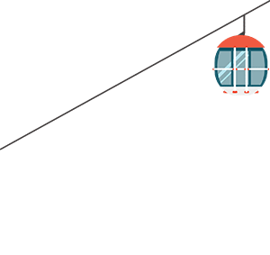
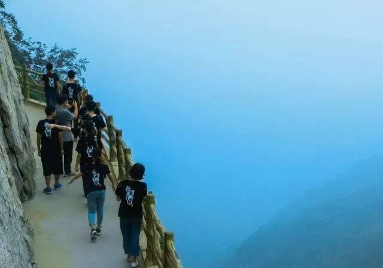
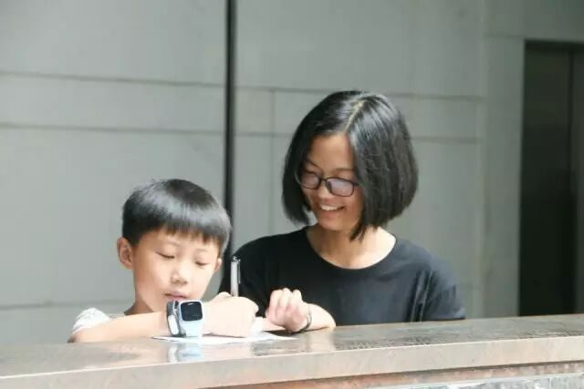

【行者无疆·柒·文化虽苦旅，行者却无疆】

文化虽苦旅，行者却无疆
文：岳浩然

所谓文化“苦”旅
文化从起始到它未尽的终点，对于旁观的人来说都不“苦”。苦的是这趟旅程，和背负这趟旅程的人，风餐露宿，翻山越岭。

“
”

古人圣训；“读万卷书，行万里路。”直到今天我才明白，何为“行万里路”，这不只是简简单单地行之万里，更在于在这行走之间，回顾四周，驻足留意，触摸思索，再有所顿悟。原来的我所认为行者之无疆，在于“海阔凭鱼跃，天高任鸟飞”的行走地域没有界限，天地虽大，但任我逍遥。后来我才懂，行者之无疆，更在于“四顾悄然,天地相合”的思想境界，在于“不闻不若闻之,闻之不若见之,见之不若知之,知之不若行之”的开阔眼界。
而这些，便都是“行者无疆”教给我的。
那些
行者无疆
“
”
是“行者无疆”让我体会到，文化调研和旅游的不同。文化调研更能放宽我的心态，让我安静下来，去触摸感受这一路上所蕴含的文化。
是“行者无疆”让我明白，文化苦旅的苦，不是广义上的艰苦之意，而是将自己代入这文化历史中，所体会到的历尽了沧桑的文化与文物流露出的苦涩。
也是“行者无疆”让我顿悟，在延续了历史文化的今天，我们怎能说这文化是“苦”的？我们不过是追溯时间，看到背负文化前行的“器宇轩昂”的“浪子”们有多苦……
嵩阳书院
有感
书院嵩高景最清，
石幢犹记故宫名。
山色溪声留宿雨，
菊香竹韵喜新晴。
初来岂得无言别，
汉柏阴中句偶成。
最容易被忽略的，却往往最容易触动内心。实践的第三天，因为长时间的路程，留给参观嵩阳书院的时间只好压缩。
但当来到这个建制古朴雅致，以理学著称于世，以文化赡富，文物奇特名扬古今的书院，一上午奔波的劳累便随之消散，最吸引我的，不仅仅是这山清水秀，“书院嵩高景最清，石幢犹记故宫名。山色溪声留宿雨，菊香竹韵喜新晴。初来岂得无言别，汉柏阴中句偶成。”
更是那蕴含于“高山仰止”四个字下的文化气息，蕴含于红木建筑下的厚重与莫名给我的责任感，踏步于古朴阶梯中，我不断地问自己：“你来了么？你是哪一代的中国书生？”


思者无域
行者无疆


“向往巅峰，向往高度，结果巅峰只是一道刚能立足的狭地。不能横行，不能直走，只享一时俯视之乐，怎可长久驻足安坐？上已无路，下又艰难，我感到从未有过的孤独和惶恐。世间真正温煦的美色，都熨帖着大地，潜伏在深谷。君临万物的高度，到头来只构成自我嘲弄。”
行者脚下的路总会有尽头，但是，心无界，爱无界，文化可传承，也无界。我想，这便是我们“行者无疆”的使命，通过行走，发现文化，了解文化，传承文化。


行者们，我想对你们说~
镜头下的行者无疆，走的每一步都是那么坚定，发的每一张调查问卷都那么丰富，写下的记录与感悟，每一个字都那么认真与深情，还有，每一次大家的合照，笑容都充满了幸福！



行者，一直在路上……
我写不出太优美的词语来夸赞我们这个团队
我说不出太深情的话语来表达对你们的爱
我愿用镜头记录我们的瞬间
用视频来回忆我们的成功
——浩然敬上
请输入标题 abcdefg

河南行
且将新火试新茶
诗酒趁年华
行者无疆
♦
贰
公众号：行者无疆实践团
微博号：行丶者丶无丶疆
邮箱：2758025831@qq.com